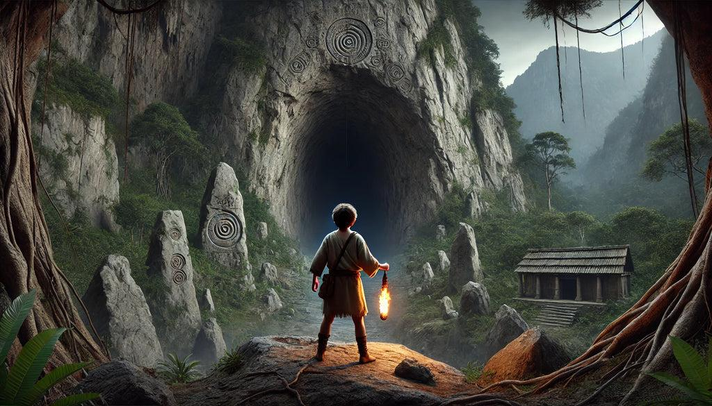
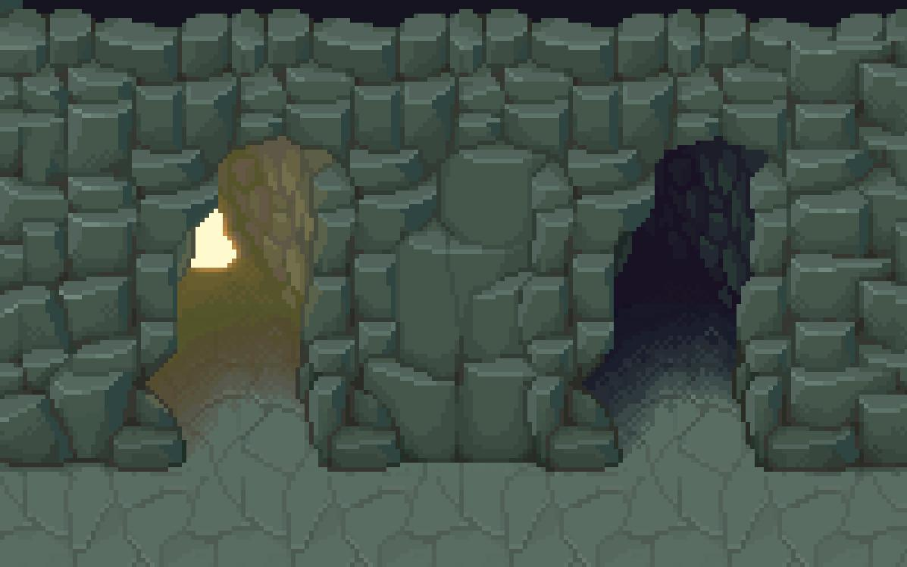
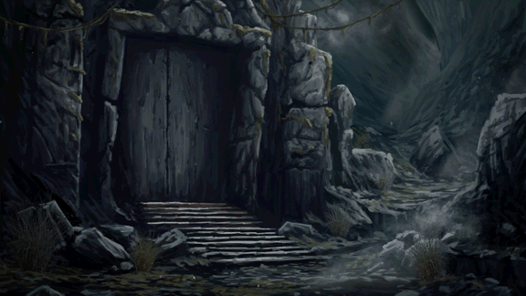

After a long walk, the boy arrived before a colossal cave. Two tunnels opened up before him.
JACK: — This is it... I need to find the Torch. But why does this place seem to be watching me?
MYSTERIOUS VOICE: — The light wasn't stolen by chance, boy. If you wish to get it back, you'll have to prove you deserve to carry it.
JACK: — Who's there?! Show yourself!
No answer. Only the sound of something heavy moving in the depths...

What will Jack do?
The door is locked. Jack needs an iron key
Jack - Are you want to enter this tunnel? Something feels wrong...
JACK: I heard something... Are you absolutely sure you want to keep going?

VOICE MYSTERIOUS
I am small, but I can open paths. I lie hidden where stone meets darkness. Search carefully, traveler, for without me, there is no passing.
The key is hidden nearby. Look carefully among the stones!
Jack: - I found the key!! Now I can go deeper into the cave.